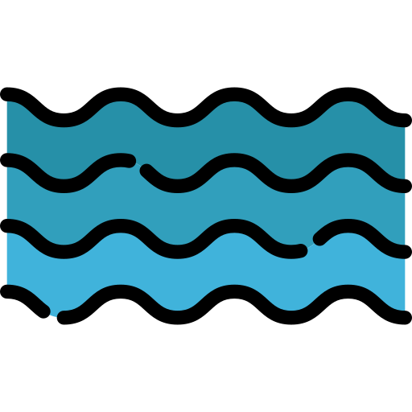
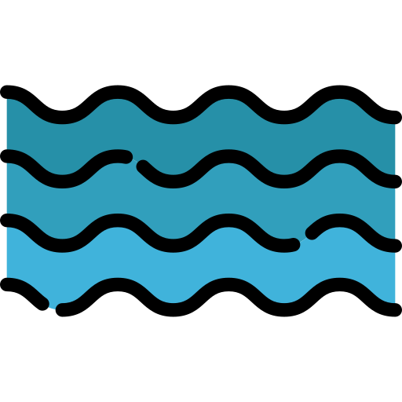

Объекты городской инфраструктуры
 


Добро пожаловать на сайт «Карта Ответственности»!
«Карта Ответственности» - онлайн-сервис, где размещена информация о зонах ответственности комитетов, муниципалитетов и казённых учреждений по вопросам уборки Санкт-Петербурга.
На платформе «Карты» пользователь может посмотреть куда именно обращаться с вопросами и предложениями по уборке определенной территории.